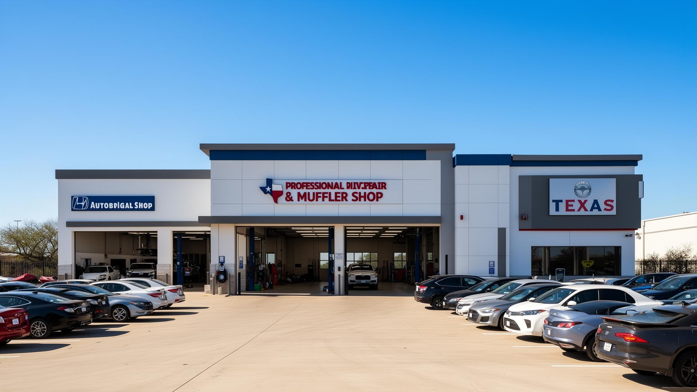

Tire Repair & Sales
Flat tire repair, new tire installation, mounting, balancing, rotation, and quality tire sales for all vehicle makes and models. Fast same-day service.
Family-Owned · Affordable Prices · Fast Service
✦ Se Habla Español ✦
Expert auto repair for Irving, Grand Prairie, Las Colinas, and all surrounding DFW communities
Flat tire repair, new tire installation, mounting, balancing, rotation, and quality tire sales for all vehicle makes and models. Fast same-day service.

Custom muffler installation, exhaust pipe repair, catalytic converter service, and performance exhaust upgrades. We fix loud exhausts and failed emissions.

Engine diagnostics, tune-ups, transmission service, shocks, struts, and comprehensive auto repair. Our experienced mechanics fix it right the first time.

Official Texas vehicle safety and emissions inspection station. Quick turnaround — walk-ins welcome. Serving Irving, Grand Prairie, and all DFW.

Brake pad replacement, rotor resurfacing, caliper service, and full brake system inspection. Don't wait on squeaky brakes — your safety matters.

Conventional and full synthetic oil change service with multi-point inspection. Quick, affordable, and professional — keep your engine running its best.
At Poblano's Tire Mechanic & Muffler Shop, we've built our reputation one car at a time right here in Irving, Texas. As a family-owned and operated business, we treat every customer with honesty, respect, and quality workmanship.
Our bilingual team serves Irving, Grand Prairie, Las Colinas, Euless, and all of DFW. Whether you need a quick oil change, a Texas state inspection, or complex engine work — we've got you covered.

Matt Hart
Local Guide · Irving, TX · Google
"They repaired a leaking tire for under $10 without even taking it off the car or even using a jack. Don't be an idiot and go anywhere else."
fatema biviji
Local Guide · 32 reviews · Google
"One of the best experiences I've had at a local tire shop. Honest and helpful. They put a plug after removing a screw and gave me the little caps for the tires that were missing them."
Angel Provence
Local Guide · 68 reviews · Google
"I needed my muffler fixed, they had it fixed and ready to go in less than 20 minutes. Thank y'all so much, I will recommend everyone to you."
Jefferson Braga
Local Guide · 87 reviews · Google
"They've been taking care of folks in the neighborhood for years. Their team and second shop are great too."
Simple Yay
Irving, TX · Google
"15 minutes before they closed I had an issue with my muffler. They still stayed late to get the job done. Thanks!"
Salvador Ramos
Irving, TX · Google
"Excelente atención y precios accesibles."
Common questions about our shop in Irving, TX
We're at 1502 Rock Island Rd, Irving, TX 75060 — near the intersection of Rock Island Rd and N Rogers Rd. We serve Irving, Grand Prairie, Las Colinas, Euless, Bedford, Carrollton, and the greater Dallas area.
Yes! We're open Monday–Friday 8:30 AM to 8:00 PM, and Saturday 8:30 AM to 6:00 PM. Closed on Sundays. Walk-ins are always welcome.
¡Sí, se habla español! Our bilingual staff can assist you fully in both English and Spanish. We proudly serve Irving's diverse community.
Yes, we are an official Texas state inspection station. We perform safety and emissions inspections for all vehicle types. Walk-ins welcome — quick turnaround.
Walk-ins are always welcome! You can also call us at (214) 245-9086 to check wait times or ask about your specific repair before coming in.
We primarily serve Irving, TX. Customers also come from Grand Prairie, Las Colinas, Euless, Bedford, Carrollton, Farmers Branch, and the greater Dallas-Fort Worth area. We're conveniently located near DFW Airport.
Conveniently located near DFW Airport and Las Colinas
1502 Rock Island Rd
Irving, TX 75060
Proudly serving Irving, Grand Prairie, Las Colinas, Euless, Bedford, Carrollton, and surrounding DFW areas
Get Directions on Google Maps✦ Walk-ins always welcome · No appointment needed